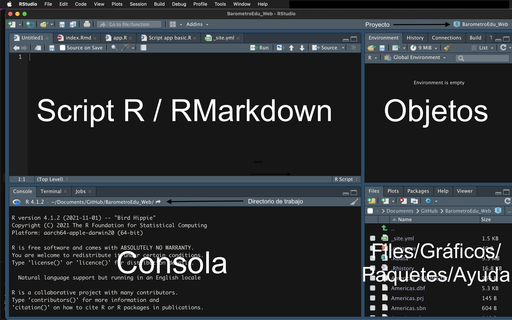

Instalando R y RStudio
¿Cómo instalar ambas aplicaciones?
R es un programa de software libre que puede ser usado para el análisis estadístico, la visualización de datos y muchas otras cosas. En este caso lo usaremos para el análisis de datos de ciencia política. R puede ser descargado desde su propio repositorio (https://cran.r-project.org)
Otro programa de software libre es RStudio, que es una interface gráfica IDE para R. En estos enlaces se pueden descargar estos programas. Primero descargue R y luego RStudio. Ambos tiene versiones para Windows, IOS o Linux.
RStudio
Luego de la instalación se puede abrir la interface RStudio. No es necesario abrir R. La pantalla de este programa se divide en 4 paneles.

Script R / RMarkdown: en este panel se muestran los objetos de programación. Por ejemplo, un archivo de script de R (*.R) o un archivo Markdown (*.Rmd), entre otros formatos. Básicamente, estos archivos sirven para escribir códigos y guardarlos en archivos.
Objetos: este panel se muestra 4 pestañas. La más importante es la primera, que muestra el Environment. En esta pestaña se muestra todos los objetos que se hayan cargado o creado, como bases de datos, vectores, listas, funciones, etc.
Consola: en este panel se puede escribir líneas de códigos, aunque no se guardarán. Aquí se procesan los códigos que se corran en algún script o Markdown y se muestran los resultados. La pestaña de consola muestra además el directorio de trabajo. En este directorio se pueden almacenar los archivos producidos en RStudio.
Panel de files/gráficos/paquetes/ayuda: en la pestaña de Files se muestra los archivos que se encuentran en el directorio de trabajo. En la pestaña de Plots se muestran los gráficos realizados. En la pestaña de Packages se muestran todos los paquetes cargados en la librería de R y se muestra los activos con un check. En la pestaña de Help se puede buscar ayuda dentro de los recursos de R, como manuales, páginas de cada librería, la documentación de los comandos.
Proyectos
En la imagen de la consola, hemos marcado una flecha que indica el nombre del proyecto actualmente en vista. En este caso, el proyecto se llama “BarometroEdu_Web”. La idea de un proyecto es tener todos los scripts, Markdown, base de datos, gráficos, etc. reunidos en un solo directorio.
Para crear un proyecto, se puede seleccionar el menú File (arriba, al costado de RStudio) y seleccionar “New Project”. Cuando se da click en esta opción, aparece la siguiente pantalla.

En esta ventana se puede escoger un nuevo directorio o uno ya existente. También hay una opción de control de versiones, que se puede asociar a GitHub, por ejemplo.
Una vez seleccionado un directorio nuevo o ya existente, todos los archivos que se creen o que se quieran usar deben estar en este directorio. Así, por ejemplo, una base de datos “lapop21.dta” que esté en este directorio podrá ser llamada mediante su nombre directamente y no necesariamente indicando toda la ruta. Si se crea un subdirectorio “base” dentro del directorio de trabajo, solo se debe especificar los subdirectorios dentro del directorio de trabajo, por ejemplo “base/lapop21.dta”.
Recursos
- Google es la principal fuente para resolver cualquier problema que tenga en R. Recuerde que en R se pueden obtener los mismos resultados de diferentes formas.
- Stackoverflow es un foro especializado donde seguramente encontrará una entrada de alguien que se ha hecho la misma pregunta que usted y que ha sido respondida por muchas personas. Tome en cuenta que en R pueden haber muchas respuestas para la misma pregunta, es decir, muchas maneras de realizar una misma operación.